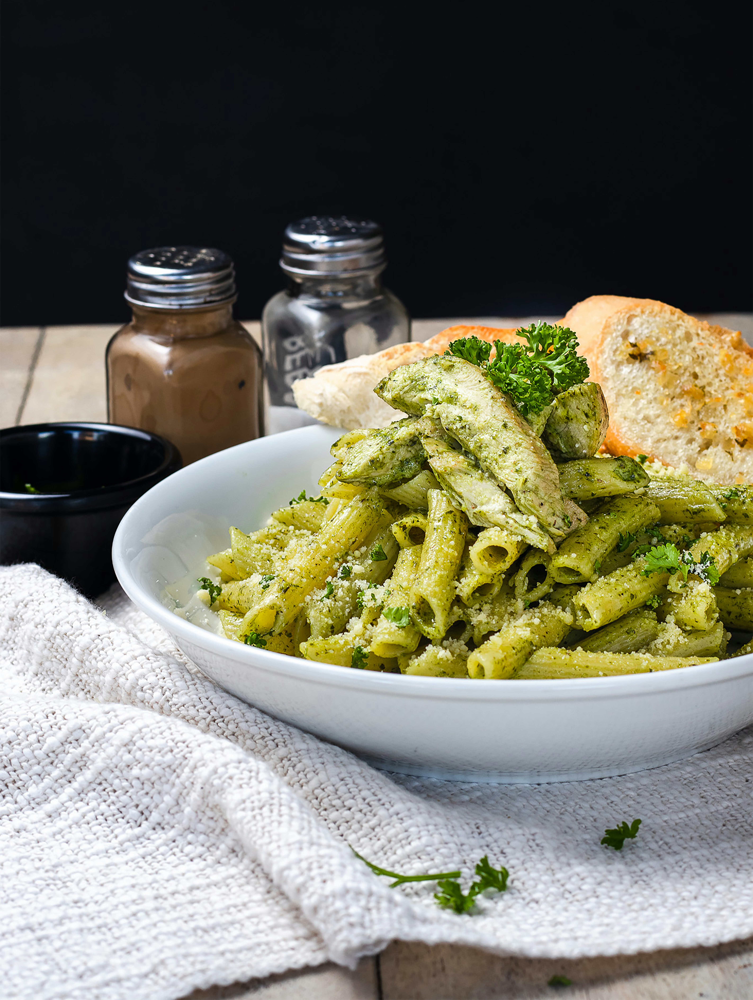

Pesto Pasta

Description
This recipe is perfect for busy weeknights and comes together in just 15 minutes. Use any pasta, and add as much pesto sauce as you like. Enjoy topped with plenty of Parmesan cheese.
Ingredients
- 1 (16 ounce) package pasta
- 2 tablespoons olive oil
- ½ cup chopped onion
- 2 ½ tablespoons pesto or more to taste
- salt to taste
- freshly ground black pepper to taste
- 2 tablespoons grated Parmesan cheese
Steps
- Gather all ingredients.
- Fill a large pot with lightly salted water and bring to a rolling boil. Stir in pasta and return to a boil. Cook pasta uncovered, stirring occasionally, until tender yet firm to the bite, about 8 to 10 minutes. Drain and transfer into a large bowl.
- Meanwhile, heat oil in a frying pan over medium-low heat. Add onion; cook and stir until softened, about 3 minutes.
- Stir in pesto, salt, and pepper until warmed through.
- Add pesto mixture to hot pasta; stir in grated cheese and toss well to coat.
Home